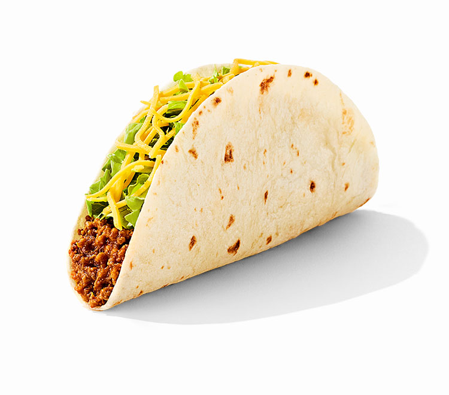
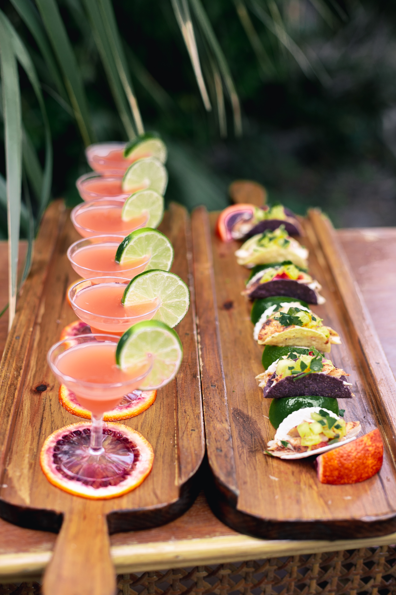
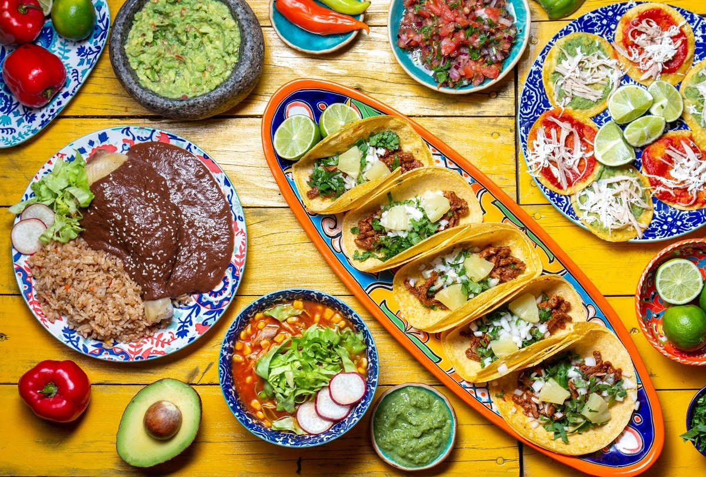

Authentic Mexican Flavor
Taco Loco is inspired by the culinary traditions of southern and central Mexico. Whether you're stopping by for a quick bite or indulging in a leisurely meal, we aim to provide an unforgettable experience that captures the heart and soul of Mexico.

Our Menu
| Item | Price |
|---|---|
| Al Pastor Taco | $3.00 |
| Asada Taco | $4.00 |
| Chicken Taco | $3.50 |
| Cheese Quesadilla | $6.50 |
Street Taco Tuesday
3 street tacos, chips, and a beer for only $10!
Our Food

